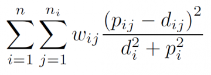

AmP parameter estimation procedure

Introduction
This page aims to describe the methodology that is used in the AmP project for the estimation of parameters of DEB models from data:
the practice and getting started, technical aspects, i.e. code-specifications and how to use it to arrive at parameter estimates,
evaluation of estimation results, accuracy of parameter estimates.
An introduction to modelling and statistics is given in the document Basic methods for Theoretical Biology.
The described procedure is coded in the DEBtool software (download from GitHub)
and follows the DEB notation.
Parameter estimation is the procedure to use data to arrive at parameter estimates by minimizing some loss function that quantifies the distance between data and model predictions, known as the estimation criterion. A loss function is a function of data, model predictions and weight coefficients, so the problem is to find the combination of parameter values that correspond with the minimum, starting from one or more initial guesses. Several methods (algorithms) can be used for this, but the result should be independent of the algorithm. A complicating factor is that the loss function typically has several local minima rather than a single one, meaning that neighbouring parameter values have higher values of the loss function. One of the local minima is the global minimum, which is usually at the parameter estimate that we are looking for. But the difference between the global and local minima might be small, and a local minimum might be at parameter values that have a much better eco-physiological interpretation. Typical for parameter estimation in an AmP context is that we not have a single data set, but several to many, which are all used simultaneously to estimate all parameters in a single estimation step; the predictions for e.g. respiration and reproduction share particular parameters and must, therefore, be considered simulataneously. This feature poses strong constraints on the choice of loss function. Although it is satifyling to arrive at a good fit, the interpretation of parameter values is at least as important. This inspired us to develop the notion of parameter estimation-in-context.
Times and rates depend on (body) temperature and temperatures can differ between data sets. For this reason, and for comparison, all parameters are estimated for the chosen reference temperature of 20 °C and need to be converted to the current temperature.
Typified DEB models w

Species specific details that are not included in the computation of implied properties:
- Acanthocephalans live in the micro-aerobic environment of the gut of their host. They don't use dioxygen, but ferment. It is possible to model this (see Section 4.9.1, Kooijman 2010), but this is not yet implemented in the code behind the calculation of the statistics. These particular respiration predictions should, therefore, be ignored.
- Cephalopods are typically semelparous (death at first spawning) and die well before approaching ultimate body size. For practical purposes, this early death is included as an effect of ageing, but ageing has probably nothing to do with this. The asymptotic size is calculated in the pars-file and some of the listed properties are not realistic as a consequence.
- The toadlets Crinia lower their allocation fraction to soma between hatch and birth (Mueller et al 2012).
- Mammals take milk during their baby-stage, weaning is included in all stx models for mammals as a maturity threshold, but the change in diet is not taken into account.
- Many birds first reproduce in their second year under (seasonal) field conditions. They apparently have a relatively long juvenile period during most of which they are fully grown. This trait leads to high values for maturity maintenance at puberty and low values for maturity maintenance. Husbandry data indicates that birds potentially reproduce much earlier, which questions the realism of these two parameters.
Data and data types
Data can be classified as- dependent data, i.e. data that need to be predicted, while these predictions depend on independent data and parameter values
- independent data, i.e. data that are considered as given, do not depend on parameter values, but modifies predictions for dependent data
A data set can be of several types:
- zero-variate data, i.e. independent data in the form of a single number
- uni-variate data, i.e. independent data in the form of a vector of numbers
- bi-varate data, i.e. independent data in the form of a matrix of numbers
- tri-variate data, i.e. independent data in the form of an 3-dim array of numbers
- pseudo-data, theoretical zero-variate (so indepenent) data for a generalized animal that is added (with small weight coefficients) to avoid unrealistic parameter estimates
- auxiliary data, dependent data of any type (which, therefore, do not need to be predicted, for instance temperature)
Pseudo-data are parameter values corresponding to a generalized animal, but treated as dependent data, i.e. typical values for a wide variety of animals (Lika et al 2011). These values may change as the AmP collection increases. Pseudo-data serve to fill possible gaps in information that is contained in the real data. Only intensive parameters can play the role of pseudo-data points, i.e. parameters that are independent of body size. Species-specific parameters should not be included in the pseudo-data, especially the zoom factor, the shape coefficient and the maturity levels at birth and puberty. Since the value for specific cost for structure (E_G) is sensitive for the water content of tissue, which differs between jelly fish and vertebrates, it is replaced by the growth efficiency kap_G: energy fixed in new tissue as fraction that energy that was required for its symthesis. Pseudo-data, if used properly, can play several roles. It serves the task of increasing the identifiability of parameters and, thus, preventing the ambiguous determination of parameter values. It can also improve the eco-physiological interpretation.
The difference between independent data and parameters can be subtle, as illustrated by the chemical parameters: chemical potentials and coefficients, specific densities. All entries have such parameters (which are typically kept fixed at default values), but most do not use them. If respiration data must be predicted, for instance, while DEB theory uses the conservation laws for chemical elements for these predictions, these parameters are used. Although all chemical elements can be used in DEB theory, only C, H, O and N are used for simplicity's sake. The composition of N-waste and the specific densities (roughly the dry-wet weight ratio's) are taxon-specific. These parameters are set at default values, but can be oberwritten by the user, and can also be estimated (from data), which is why we call them parameters, rather than independent data.
The difference between dependent and independent data depends on the context of the research and of data availability. Food intake is rarely known, for instance, and the value of the maximum weight (as zero-variate data) is frequently inconsistent with uni-variate time-weight data. Correct or not, the hypothesis is that food intake (and/or quality) differed, and the data are made consistent by considering the (constant) scaled functional response as dependent data (or parameter, if you wish), while, if known, it would have been independent data. The feeding or temperature trajectory during ontogeny, for instance, is typically treated as independent data, but if the research problem includes the reconstruction of such trajectories, is becomes dependent data, where the species parameters can be treated as given, or estimated simultaneously as well. See, for instance, the entries for the emperor penguin or the Manx shearwater, but many examples exist.
The real (as opposed to pseudo) data should at least contain the maximum adult weight. However, it is preferable to also include weight and age at birth and puberty as well as the maximum reproduction rate. Notice that times and rates without temperature are meaningless. This combination already fixes the growth curve in a crude way, specifies allocation fraction kappa and the maturity thresholds at birth and puberty. The weight can be dry, ash-free dry or wet weight, the conversion involves specific densities, which belong to the chemical parameters. Assuming that the specific density of wet mass is close to 1 g/cm3, check the values for d_V and d_E that refer to dry weight.
Data quality and availability
The quality and availability of data varies enormously over species, which has consequences for the entries. Data of most entries were taken from the literature, and collected by workers with widely different prior knowledge. This situation is far from ideal and we hope that future data acquisition is done with the DEB context in mind.Data from field conditions suffer from the problem that temperature and feeding profiles are generally unknown. To a lesser extent, this also applies to laboratory conditions. Only a few species can be cultured successfully and detailed (chemical) knowledge about nutritional requirements hardly exists for any species. The idea that `some prediction is better than no prediction' fueled the collection (e.g. for management purposes), but where data are guessed is clearly indicated in the mydata-files. The hope is that such weak entries will improve over time by supplementing data and re-estimate parameters. Predictions might help to prioritize further research.
Another motivation to include weak entries is that predictions for situations that have not yet been studied empirically can be used to test the theory rigorously. It is encouraging to see how few data already allows for an estimation of parameters. That results are not fully random is supported by the observation that similar species (in terms of body size, habitat and taxonomy) have similar parameter values, despite lack of advanced data. See, for instance, the different species of tardigrades. The reliability of the resulting estimates and predictions should always be evaluated in the context of the data on which they are based. Generally, the more types of data, the more reliable are the results.
Where many different data sources are used, however, conditions can vary to the extent that variations cannot be ignored. In some mydata-files this is taken into account by assigning different feeding conditions to different data sets. The scaled functional reponse is the food intake as fraction of the maximum possible one for an individual of that size; this food intake flux is multiplied by the digestion efficiency to arrive at the assimilation flux. The scaled functional response only takes differences in food density into account, not differences in food quality. If food qualities differ, the scaled function response is no longer less or equal to 1, but might be larger. If feeding densities and qualities are not specified with the data, this "repair" is far from ideal, however.
The variation not only concerns environmental conditions, but also differences in parameter values among individuals that have been used. Parameter values tend to vary across the geographical range of a species, a problem that applies to many fish entries. Although parameter values are better fixed with a growing number of data types, the inherent variability works in the opposite direction. This is why marks have been given for both completeness of data and goodness of fit.
Generally the use of statistics derived from observations, such as the von Bertalanffy growth rate or the half saturation coefficient, as data from which DEB parameters are estimated, is discouraged. It is far better to base the parameter estimation directly on the measurements, avoiding manipulation or interpretation. For instance, if wet weights were measured, use wet weights as data and do not convert them first to dry weights (or vice versa).
Although DEB theory concerns all organisms, the collection is only about animals, for the reason that they can live off a single (chemically complex) resource and thus can be modeled with a single reserve and resource availability is relatively simple to characterize. Within the animals, we made an effort to maximize coverage, given limitations imposed by data availability.
Data completeness
For comparative purposes, it helps to judge the completeness of the data using a marking system from 1 (low) to 10 (high) (See Table).Weight coefficients
The weight coefficients serve to (subjectively) quantify the confidence of the user in the data-sets as well as for specific data points. The AmP procedure distinguishes between real and pseudo data. The weight coefficients are automatically set to Weight coeff.png where i designates the data set and j the point on data set i, where ni designates the number of points in data set i. The motivation is to ensure that each data set contributes equally to the loss function (instead of each data point contributing equally). The default weight coefficients for pseudo-data are handled differently).The user can overwrite default weight values (for either the whole data set or else particular values. This is done in the mydata file. The overwriting of the weight coefficient is done by multiplying the default value by a dimensionless factor. See Setting weight coefficients.
Loss function
A loss function is a distance measure between data and predictions, so- the distance between (multi-dim) points A and B equals the distance between B and A
- if A equals B, the distance should be zero
- distances are non-negative
 The default loss function is the symmetric bounded one: sb. It is symmetric because is values is unaffected by interchanging data and predictions and bounded because, if predictions go to inifinite, their contribution to the loss function remains limited. The latter property is absent in the symmetric unbounded loss function su. The rationale is discussed in Marques et al 2019.
The default values for the weight-coefficients for the pseudo-data depend on the choice of loss function to ensure that they play a minor role in the estimation.
Minimization of loss function
Estimation of some 15 parameters simultaneously from a variety of data cannot be routine work. You can only expect useful results if your initial estimates are not too far from the resulting estimates. It is best to either use a time-length-energy framework (as done here) or a time-length-mass framework in the selection of primary parameters and not mix them. Both frameworks can be used to predict energies and masses, using conversion factors.The minimum is found using a Nelder-Mead simplex method. A simplex is a set of parameter-sets with a number of elements that is one more than the number of free parameters. One of the elements in the set is the specified initial parameter set, the seed, the others are generated automatically in its "neighbourhood". The simplex method tries to replace the worst parameter set by one that is better than the best one, i.e. gives a smaller value of the loss-function. During the procedure the parameter are (optionally, but by default) filtered to avoid that combinations of values are outside their logical domain (Lika et al 2014).
Your best option is to use a series of short iteration runs, setting 'max_step_number' at 500, say, rather than a single long run, using continuation: continue with the previously obtained results. You can do this by first selecting 'pars_init_method' 2, meaning that you start from the values as specified in the pars_init file, in combination with 'results_output' 3 (which produces and html page with results), meaning that a .mat file is saved, and then select 'pars_init_method' 1, meaning that you continue with values as specified in the .mat file that was previously written. The significance of a series of short runs is that with each restart, the simplex has a relatively large volume, which shirks during iteration, meaning that valleys in the surface of the lossfunction are more easily detected, and the risk is reduced to arrive at a local minimum that is not the global minimum. For this reason, it is always a good idea to restart from the result, even in the case of successful convergence. Many predictions, as specified in the predict file, are the results of numerical procedures, involving small numerical errors. For this reason, it is not always possible to arrive at a successful convergence, i.e. the lossfunction has a rough surface. As long as the resulting fit is good, and the parameter values seem acceptable, this does not need to be a problem. When you think that the result is better than the values in the pars_init file, use mat2pars_init (this function does not need further input), to copy the values of the .mat file to the pars_init file.
In many cases, convergence will be smooth and easy, but sometimes convergence is more reluctant. In such cases it helps to first fix parameters in the pars_init that turn out to run to unrealistic values, and release them again if predictions are closer to data. The free/fix setting is always taken from the pars_init file, even with 'pars_init_method' 2, when the parameter values are taken from the .mat file.
Parameter estimation in practice
To obtain the estimates, you have to prepare a script-file run_my_pet and three function files mydata_my_pet,pars_init_my_pet and predict_my_pet. This can be done by the AmP entry prepare system (AmPeps), which writes these files on the basis of a graphical user interface (gui).You can follow the instructions to start an Add-my-pet estimation for a single species. The DEBtool also enables you to estimate parameters for two or more species simultaneously. This can be interesting in the case that different species share particular parameter values, and/or parameter values have particular assumed relationships. The general idea is that the total number of parameters to be estimated for the group is (considerably) smaller than the sum of the parameters to be estimated for each species.
Evaluation of estimates
To judge parameter values, you can study the implied properties, setting 'results_output' at 3, and an html-page is automatically opened in your system browser at the end of an iteration (or directly if 'method' 'no' is specified). If all looks OK, you can specify 'results_output' 4, and implied properties of related species in the collection are included in the table in the html-page.Goodness of fit criterion
The match between data and predictions is quantified by the goodness of fit using the mean relative error (MRE) and the symmetric mean squared error (SMSE). MRE can have values from 0 to infinity, while SMSE has values from 0 to 1. In both cases, 0 means predictions match data exactly. MRE assesses the differences between data and predictions additively, judging equally an overestimation and underestimation of the same relative size (e.g, +20% or -20% will give the same contribution), while SMSE assesses the difference multiplicatively, judging overestimation and underestimation by the same factor equally (e.g. x2 or x/2 will give the same contribution). Notice that the result of the minimization of loss functions does not, generally, correspond with the minimum of MRE or SMSE (unless the fit is perfect).Relative errors in a univariate data set are summarized to that of a single data-point by taking the MRE for all data-points. Only real data, not pseudo-data, are included in the assessment. If all weight coefficients of a data set are zero, it is not included in the computation of the MRE. The best situation is, of course, that of a small MRE. It is likely that the marks for completeness and goodness of fit will be negatively correlated.
The problem of a good fit for the wrong reasons is always present. It is, therefore, important to judge the realism of parameter values as well. Remember that parameters might be poorly fixed by data, and very different values can, sometimes, result in a tiny difference in goodness of fit.